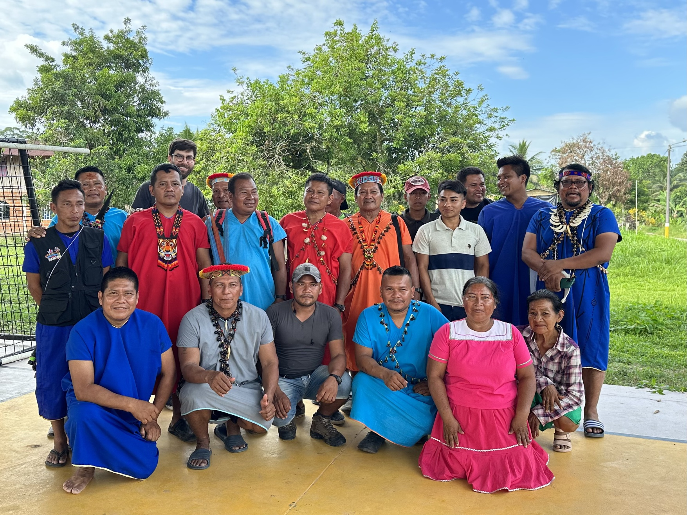
Siekopai
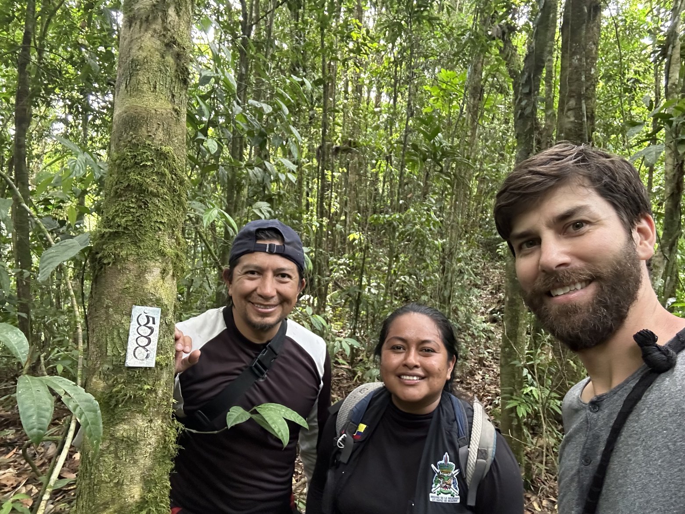
Finishing up a transect
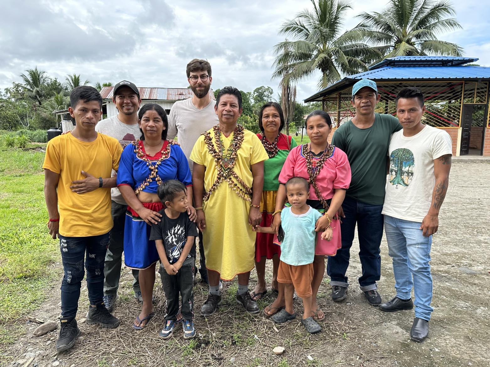
Siona
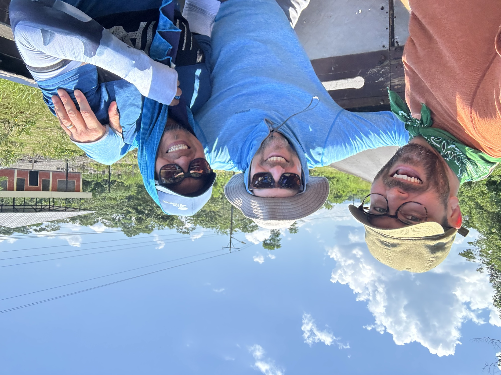
Truck ride
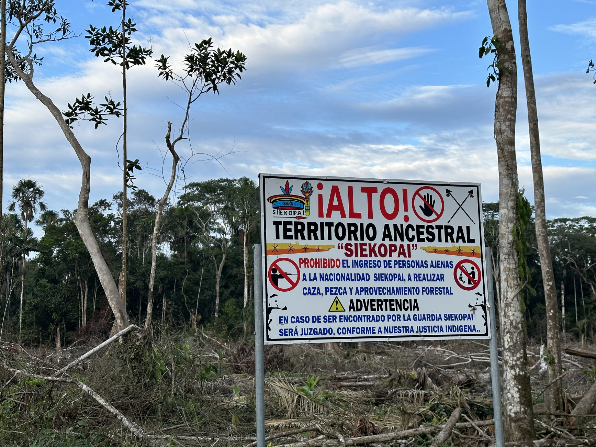
Siekopai territory

Siekopai

Finishing up a transect

Siona

Truck ride

Siekopai territory
Much of my current work explores how Indigenous peoples collectively sustain biocultural processes and territorial resilience of the Amazon. As a Co-Principal Investigator on a National Science Foundation Dynamics of Integrated Socio-Environmental Systems (DISES) grant, I collaborate with Cofán, Siekopai, and Siona communities to investigate biocultural stewardship strategies and their impact on territorial resilience. Through transdisciplinary methods, I lead capacity-building initiatives, co-develop culturally grounded research tools, and support Indigenous researchers in analyzing and applying findings to enhance self-determined stewardship.
Correia, J. E., Piaguage Lucitante, J., Weiss, L., Narváez, N., Lucitante, L., Biaguaje, A., … & Esbach, M. (2025). Stimulating Reciprocity: How Human–plant Relations Support Indigenous Cultural Revitalization and Stewardship in the Ecuadorian Amazon. People and Nature, 7, 1151–1170. [doi, Relational Thinking Blog]
Correia, J. E., Walker, R. T., Simmons, C. S., Urgilés, C., Narváez Quenama, N., Yiyocuro, L., … & Esbach, M. (2025). Biocultural Geographies: Stewardship, Indigenous Territories, and Conservation in Ecuador’s Amazon. Annals of the American Association of Geographers, 1-19. [doi]
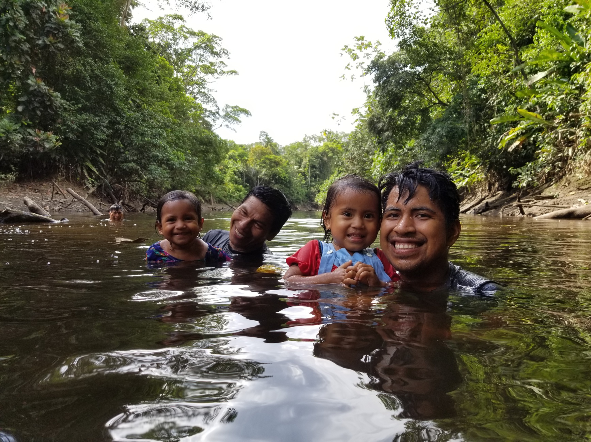
Cooling off in the Zábalo River
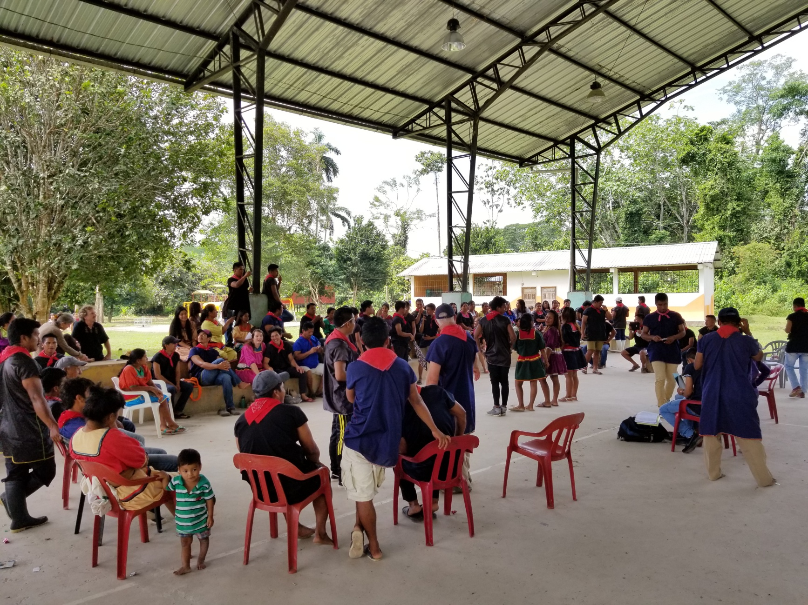
Community meeting
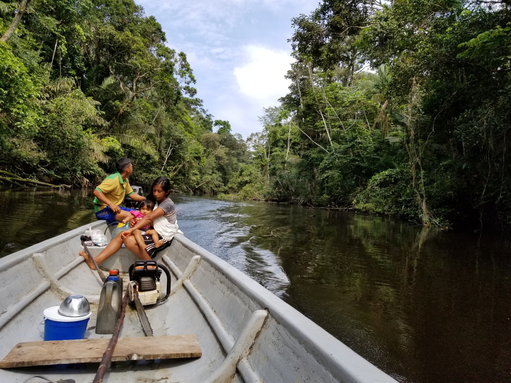
Looking for timber
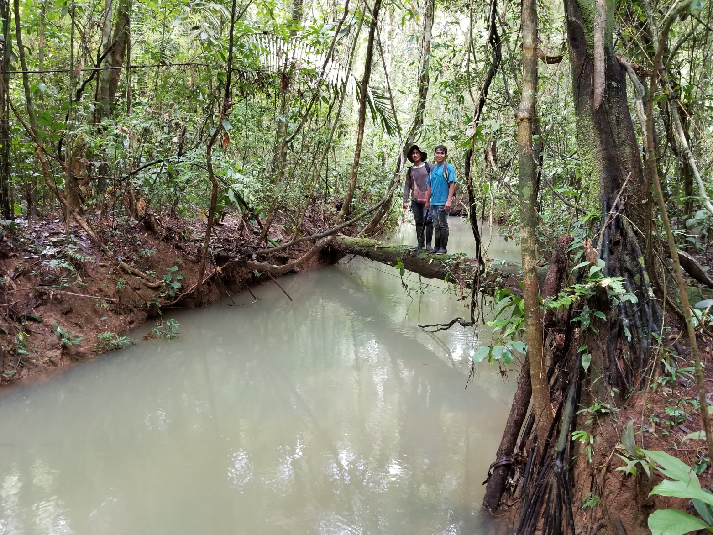
Setting camera traps
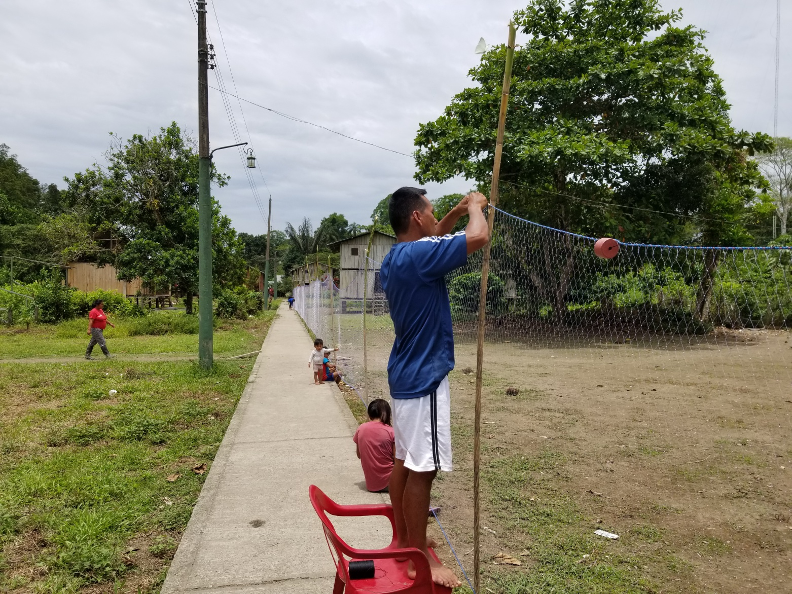
Prepping fishing net
This area of work focuses on how Indigenous practices of care, reciprocity, and governance sustain ecological abundance, cultural vitality, and territorial integrity in Amazonia. Through long-term collaboration with Cofán communities and regional analyses of Indigenous territories, I investigate how Indigenous stewardship contributes to biodiversity conservation and more equitable conservation models.
Esbach, M., Urgilés-Verdugo, C., Townsend, W., & Yiyoguaje, C. (2024). Hunting for Sustainability in the Cofán Territory of Zábalo, Ecuadorian Amazon. Conservation Letters, 17(6), e13065. [doi]
Esbach, M., Correia, J. E., Valdivia, G., & Lu, F. (2024). Amazonian Conservation across Archipelagos of Indigenous Territories. Conservation Biology, 39(2), e14407.[doi, Mongabay]
Esbach, M., Lu, F., Silva, N., & Borman-Quenama, F. (2024). Conservation and Care: Cofán Lessons for Stewarding Abundance in Amazonia. Human Ecology, 52(4), 837–850. [doi]
Esbach, M., Puri, M., Botero-Arias, R., & Loiselle, B. A. (2024). Beyond the Island: Integrated Approaches to Conserving Biodiversity Islands with Local Communities. In: Biodiversity Islands: Pockets of Protected Land in Human Dominated Environments (pp. 551-568). Cham: Springer International Publishing. [doi]
Seagrass survey
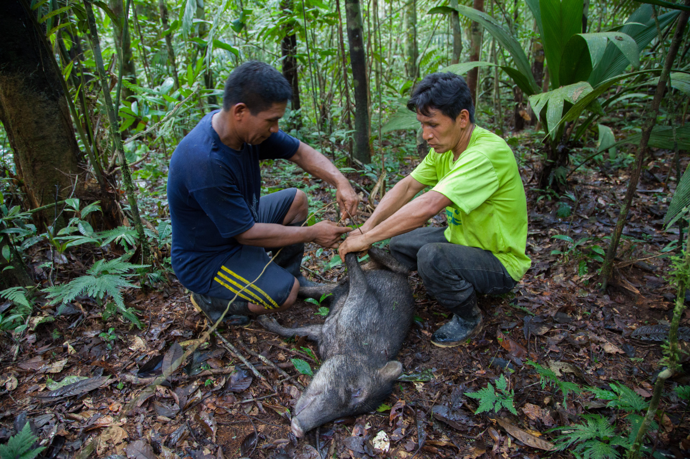
Hunting peccary
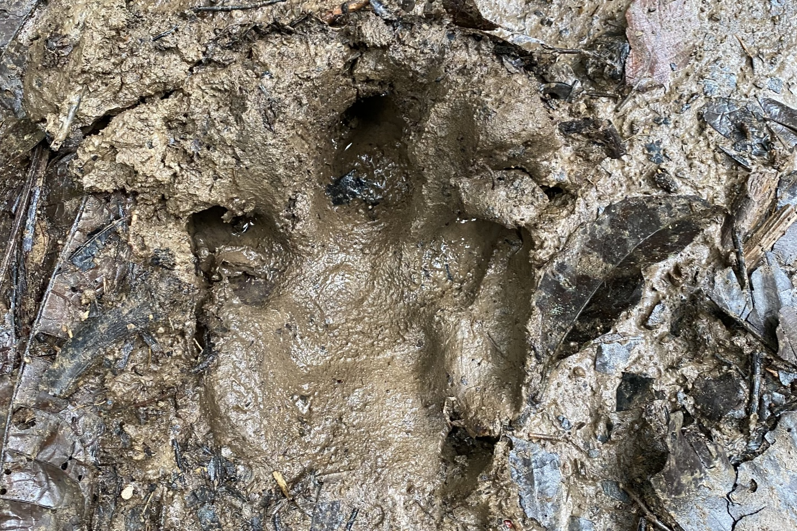
Tapir print
Through collaborative research with Indigenous communities, much of my research seeks to understand the diversity of life — human and more-than-human. Together, we document species distributions, ecological dynamics, and cultural relationships with animals, contributing to both biodiversity science and Indigenous knowledge systems.
Urgilés-Verdugo, C., Gallo-Viracocha, F., Esbach, M., & Escudero, A. (2025). Densidad y ocupación del tapir andino en los Andes del Norte del Ecuador. Ecosistemas, 34(1), 2859-2859. [doi]
Urgilés-Verdugo, C., Payaguaje, L., Biaguaje, A., Payaguaje, H., & Esbach, M. (2024). Anomalías en la coloración de piel y pelo de Dicotyles tajacu (Artiodactyla: Tayassuidae) y Dasyprocta fuliginosa (Rodentia: Dasyproctidae) en la Amazonía ecuatoriana. Mammalogy Notes, 10(2), 412-412. [doi]
Payaguaje, H…. Esbach, M. (2023). Animales del Territorio Siekopai, Sucumbíos, Ecuador. Nationalidad Siekopai. [doi]
Yiyocuro, H…. Esbach, M. (2023). Animales del Territorio Siona, Sucumbíos, Ecuador. Nationalidad Siona. [doi]
Quenama, A…. Esbach, M. (2023). Animales del Territorio Cofán de Sinangoe, Sucumbíos, Ecuador. Comunidad Cofán de Sinangoe. [doi]
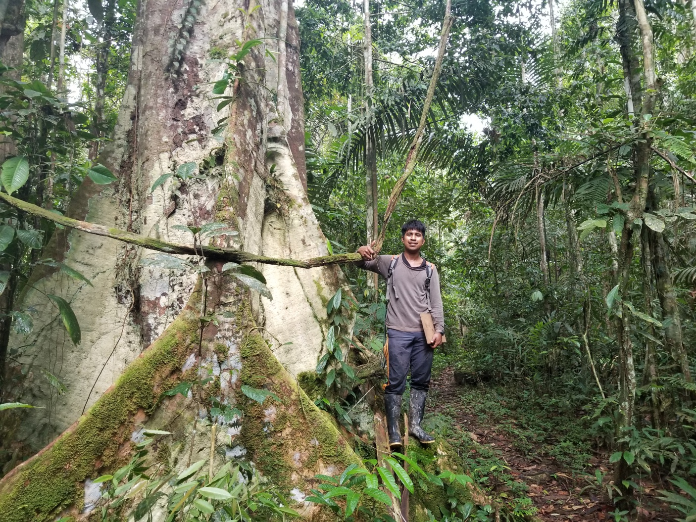
Transect surveys
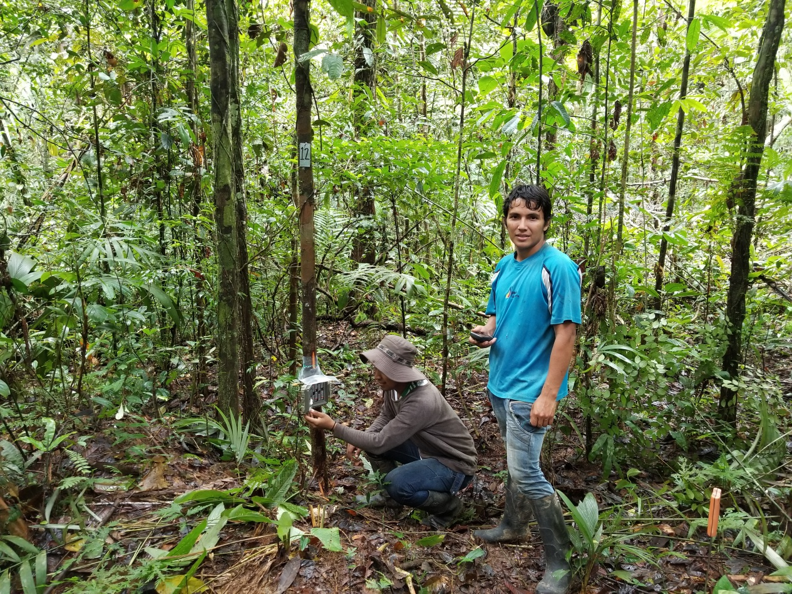
Camera trap surveys
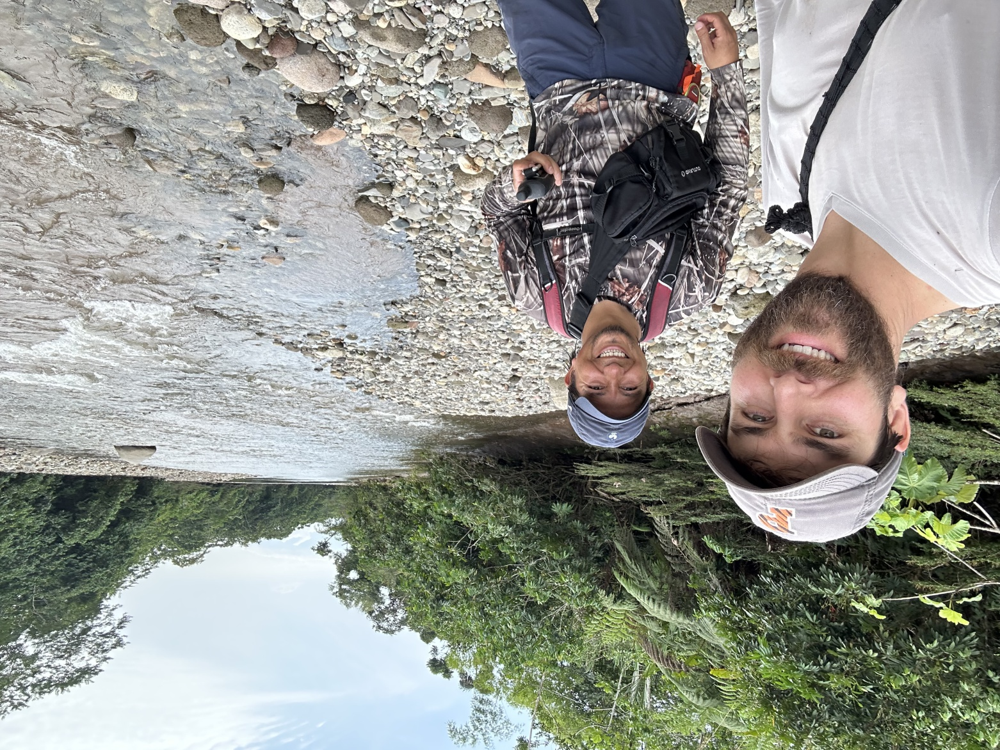
Camera trap surveys
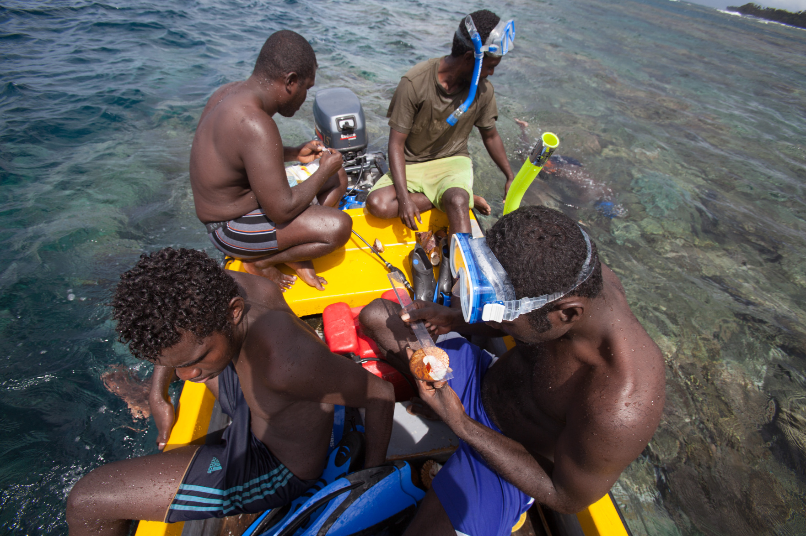
Mapping work
As an interdisciplinary researcher, I combine ecological monitoring with participatory methods to better understand and support conservation in complex environments. My work includes developing tools for estimating animal populations in dense forests, collaborating with Indigenous trackers, and applying approaches like camera trapping, participatory mapping, and spatial analysis to tackle practical challenges in biodiversity research.
Esbach, M. (2023). Estimating Mammal Density from Track Counts Collected by Indigenous Amazonian Hunters. Perspectives in Ecology and Conservation, 21(3), 247–252. [doi]
Esbach, M. & Patra, R. K. (2022). Distance Sampling from Curving Transects in Dense Tropical Forests. Biotropica, 54(5), 1182-1189. [doi]